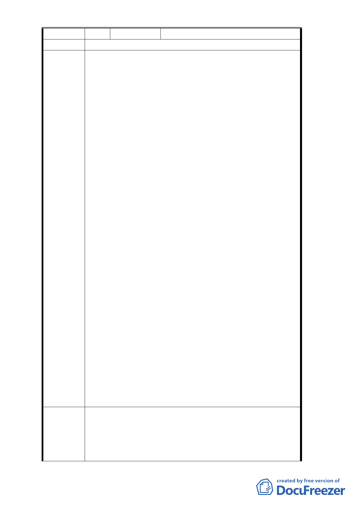

編 號2
陳情人 京○建設開發股份有限公司
陳情位置
1. 本公司針對台北市都發局 102 年 9 月 12 日府都規字第
10235776100 號公告公開展覽之修訂開發方式細部計
畫案內容有所疑問：依臺北市政府 80 年 2 月 13 日府
工二字第 80003366 號函公告土地使用計畫案第 3 頁，
本計畫區係變更為商業區（第三種商業區），及第 4 頁
，土地使用分區管制適用「臺北市土地使用分區管制
規則」第三種商業區有關規定，故本計畫區原計畫應
屬『第三種商業區』。惟臺北市政府 102 年 9 月 12 日
府都規字第 10235776100 號公告公開展覽之細部計畫
案，其第 3 頁計畫範圍示意圖將本計畫區列為「商三
特」，經查本計畫區非屬市府 84 年 9 月 27 日公告發布
實施「修訂台北市主要計畫商業區（通盤檢討）計畫
案」內變更為商業區之範圍內，且於 80 年公告發布實
施後，並未有其他計畫案將本計畫區變更為「商三特
」，故本次公開展覽計畫書圖之歷史背景及正確性需再
檢討修正。
陳情理由 2. 本公司亦為計畫區內之地主，本案維持整體開發較能
符合臺北市整體市區發展規劃之宗旨，倘若未考量相
關細節即逕行解除整體開發限制，本街廓將陷於零星
破碎之發展，實不利於都市計畫及市容之整體性。
3. 本公司依照 80 年 2 月 13 日公告之都市計畫案內容所
約定代所有地主於 86 年 11 月 21 日捐地三成移轉登記
給台北市政府，現在代捐土地問題尚未釐清，市府斷
然解除整體開發，非常不當，且將損害本公司權益。
4 依照 80 年 2 月 13 日公告之土地使用計畫案內容所載，
未捐地前，整個基地之容積率為 392％；而在捐地 30
％後，其剩餘之 70％土地之容積率應為 560%，惟據報
載所示，台北市都發局卻將容積率逕行錯誤解讀為 392
％，即與原計畫所定之容積率明顯不合。且本案於都
市計畫委員會第 646 次專案小組於討論本案容積率爭
議時，亦曾表示應該詳實探究歷史資料及當時之情況
，來釐清真相，而非貿然認定錯誤之容積率，損及原
計畫全街廓權利人之利益。
1. 公展書圖內容應將本計畫區之土地使用分區更正為第
三種商業區，避免與本市商三（特）土地混淆。
建議辦法 2. 建議計畫緣起應納入原計畫審議背景及過程，修訂計畫
內容納入本計畫區適用「臺北市土地使用分區管制自治
條例」第三種商業區有關規定，以明確界定本計畫區之
- 22 -